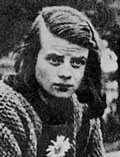

главная  персоналии
персоналии  София Шолль
София Шолль
главная |

Личность в историикраткая энциклопедияПроект «Личность в истории» посвящен людям — современникам грандиозных исторических событий, носителям редких качеств или людям, взгляды которых опередили их время. |
|||||||||||||||||||||||||||||
Коротко |
Статьи |
Персоналии |
Литература |
||||||||||||||||||||||||||
София Шолль |
|||||||||||||||||||||||||||||
|
«Террор непрестанно усиливался. Если в 1941 г. нацистские суды вынесли 1146 смертных приговоров немецким антифашистам, то в 1944 г. — 5764. Фанатическая пропаганда делала свое дело, и слова правды с трудом доходили до людей. Все это делало борьбу против фашизма внутри страны чрезвычайно сложной». Проэктор Д. М., |
 | ||||||||||||||||||||||||||||
Биографическая справкаСофия Шолль (Scholl) (1921–1943 гг.), студентка Мюнхенского университета. Вместе со своим братом Хансом Шоллем (1918–1943 гг.) создала подпольную антигитлеровскую организацию «Белая Роза» (Weise Rose). Члены организации печатали и распространяли тексты антинацистских проповедей мюнстерского епископа фон Галена, а с лета 1942 года размножали и распространяли выдержки из законов Ликурга и Солона. Позднее организация стала призывать к свержению режима. С начала 1943 года «Белая роза» стала выступать более открыто. После поражения Германии в Сталинградской битве члены «Белой Розы» напечатали и разбросали листовки с призывом к восстанию. 19 февраля 1943 года они сумели организовать в Мюнхене студенческую манифестацию. В тот же день брат и сестра Шолль, а также другой член их организации Кристофер Пробст были арестованы гестапо. После трех дней допросов и пыток все они были приговорены к смертной казни и вечером 22 февраля 1943 года казнены. Хронология
Цитаты«Не верьте национал-социалистской пропаганде, заставляющей вас дрожать перед большевизмом! ??дею империалистического господства, с какой бы стороны она не шла надо обезвредить навсегда… При помощи разумного социализма рабочий класс должен быть освобожден из того состояния глубочайшего рабства в котором он находится». (??з последней листовки «Белой розы») «Мы не будем молчать. Мы ваша совесть. «Белая роза» не оставит вас в покое». (??з текста памфлета «Белой розы») «Ты войдешь в историю. Есть другая справедливость помимо нынешней». (Отец Ханса Шолля о его деятельности.) «Предательское пособничество врагу, подготовка государственной измены и подрыва оборонной мощи…» (??з текста обвинения Гансу, Софии Шолль и Кристофу Пробсту) «…все выходы из университета были перекрыты. Каждый, кто имел листовку, должен был сдать ее специально назначенному для этого человеку. Так мы стояли два часа и ждали, пока наконец Ганс и его сестра со связанными руками не прошли мимо нас…» (??з воспоминаний Кристы Мейер-Хайдкамп) Список литературы
|
|||||||||||||||||||||||||||||
|